Sustainable Living Inspiration Gallery
Real people making simple changes for a zero waste lifestyle.
Reusable Swaps
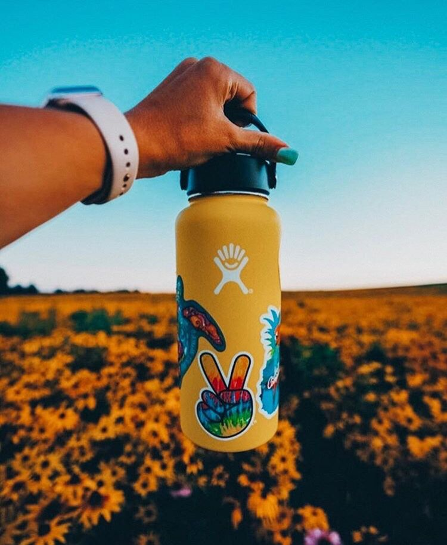
Ditching disposable plastic bottles
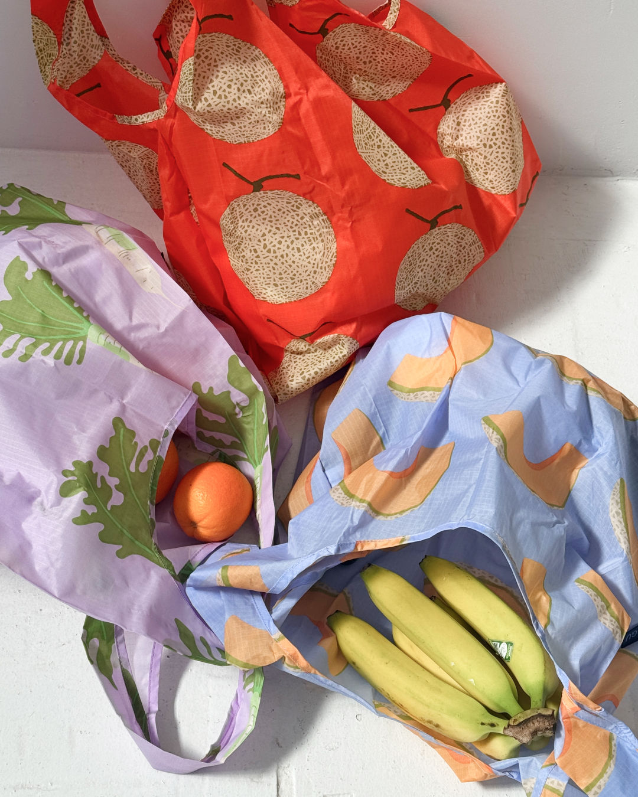
Reusable tote bags for every shopping trip
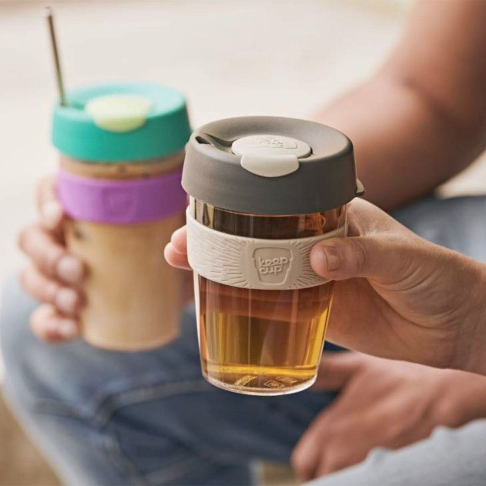
Bringing your own cup to cafes
Kitchen & Food Storage
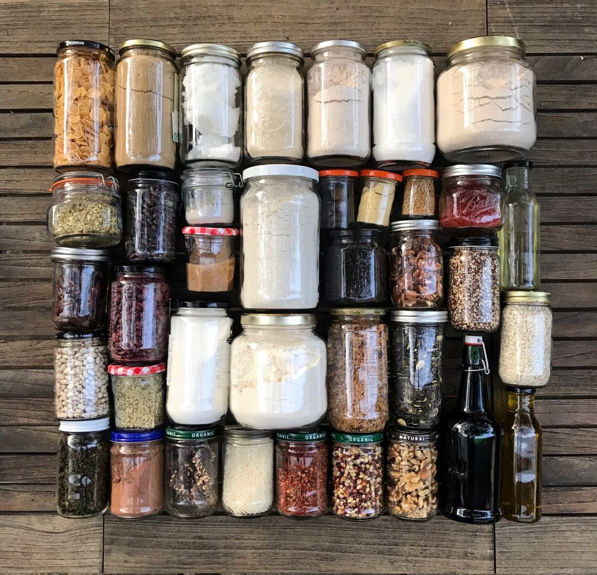
Glass jars for storage
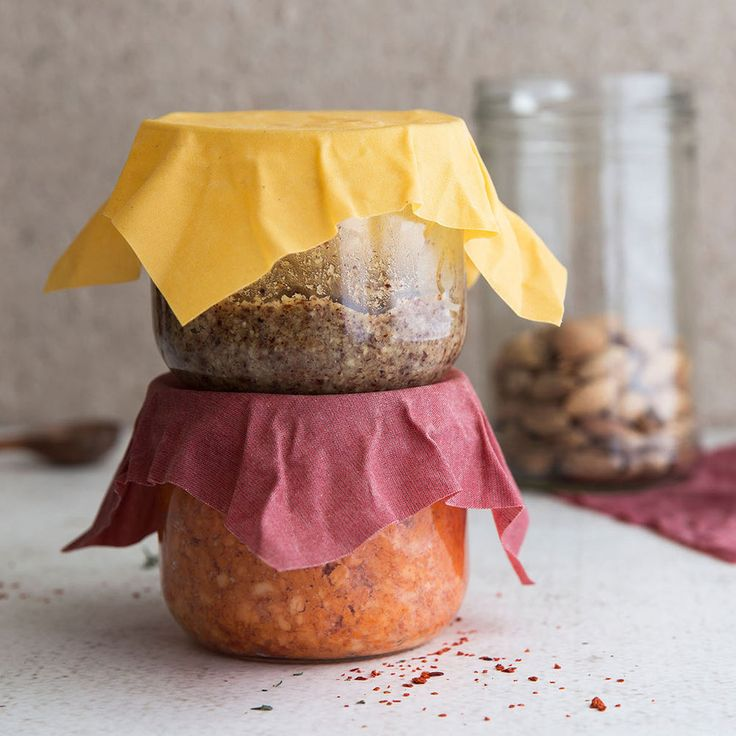
Beeswax wraps replacing plastic wrap
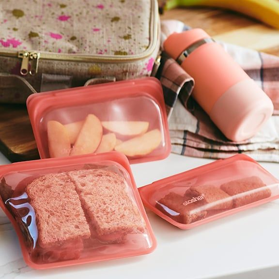
Reusable silicone bags for leftovers | Packing lunch in resuable containers
Shopping & Groceries
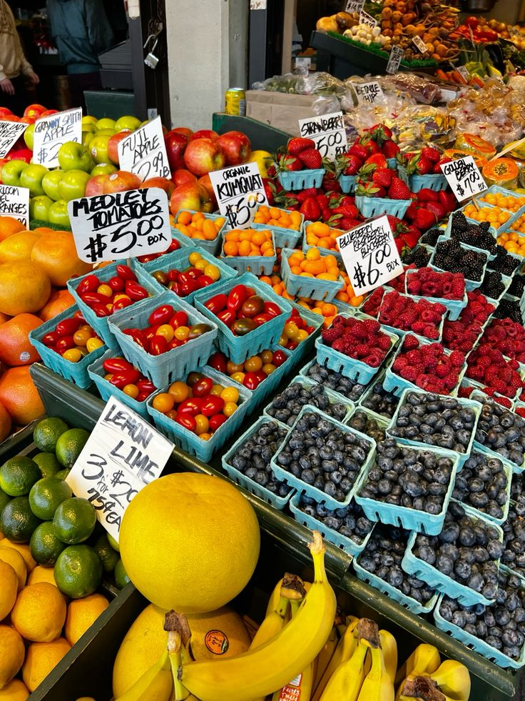
Shopping local farmers markets
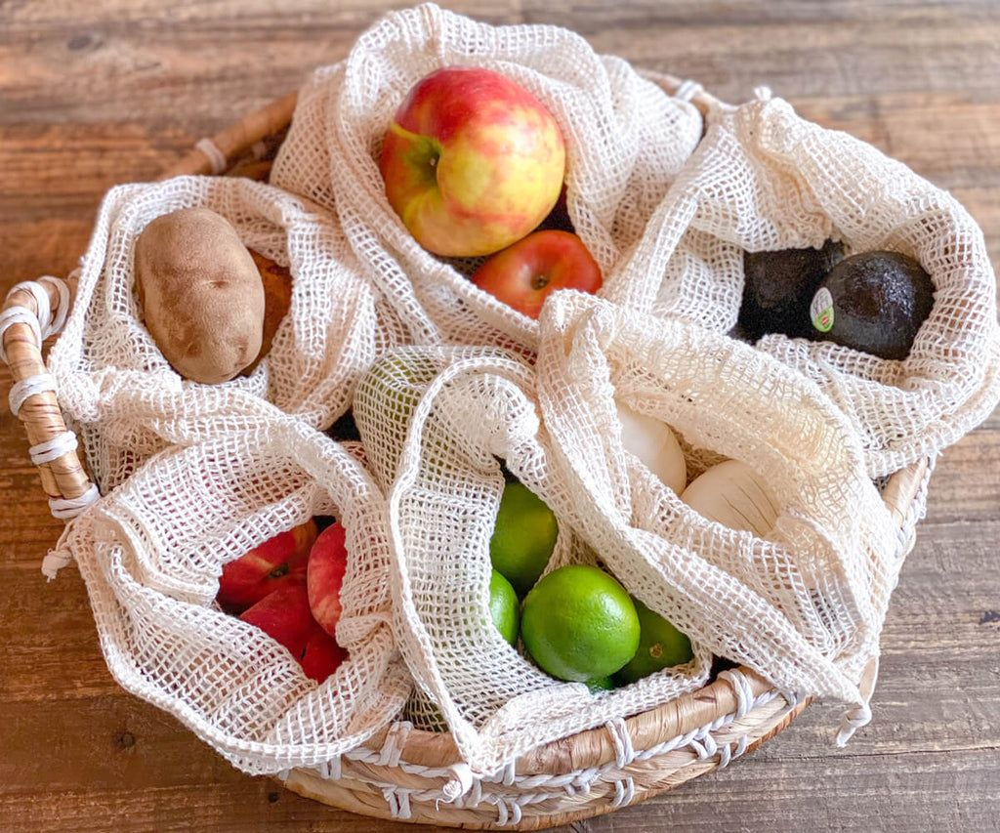
Mesh produce bags for fruits and veggies
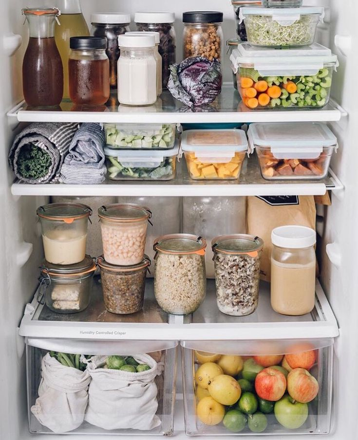
Planning meals to avoid overbuying
Bathroom Essentials
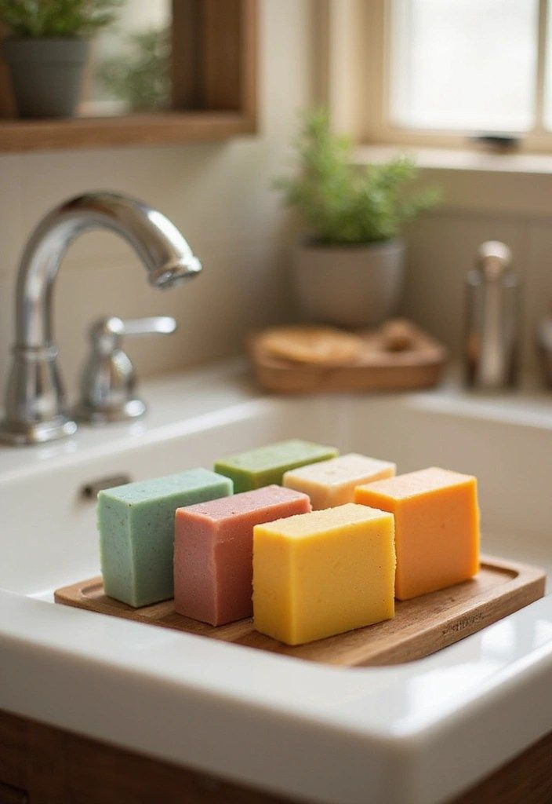
Bar soap and shampoo bars
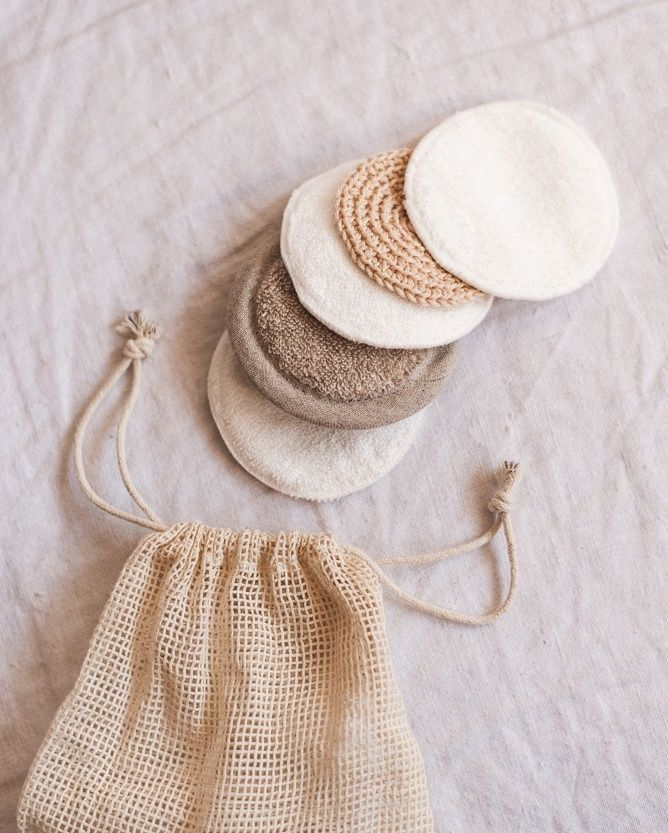
Washable cotton rounds for makeup removal
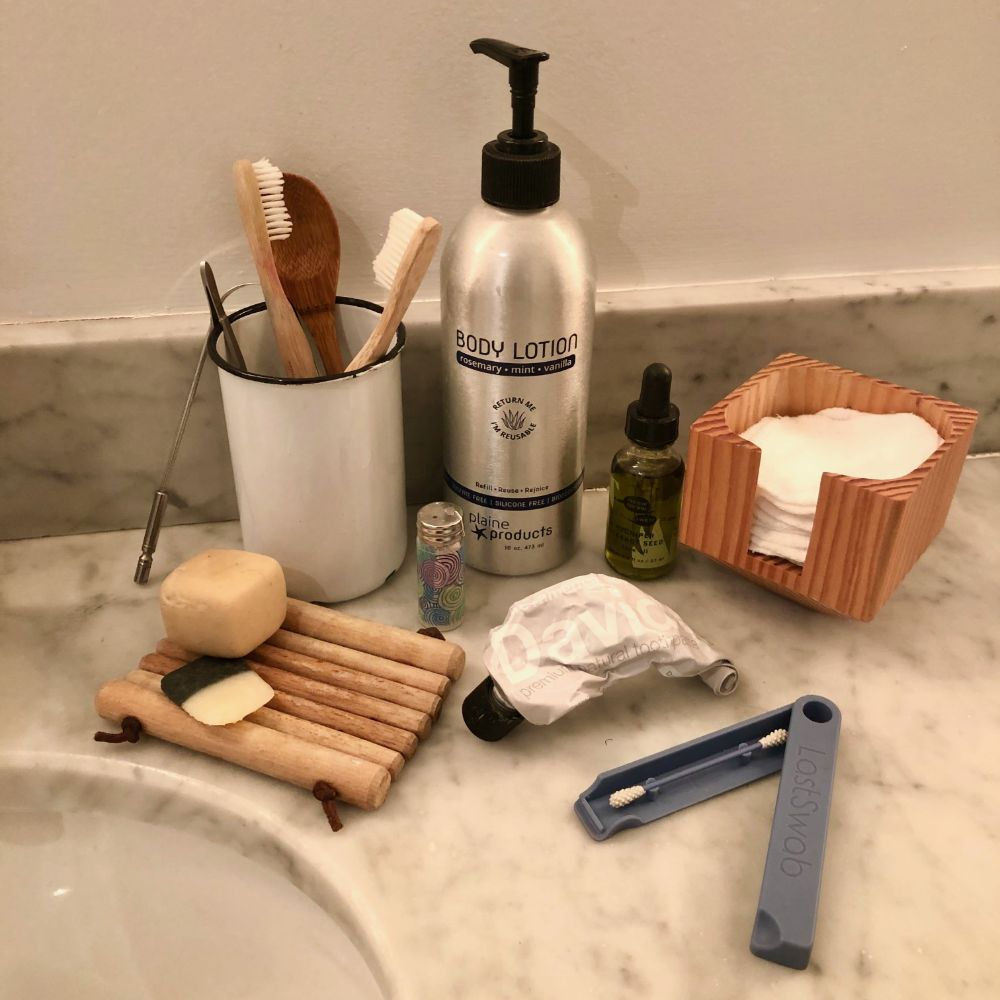
Refilling products instead of buying new bottles
Secondhand Finds, Clothing Care & Repair
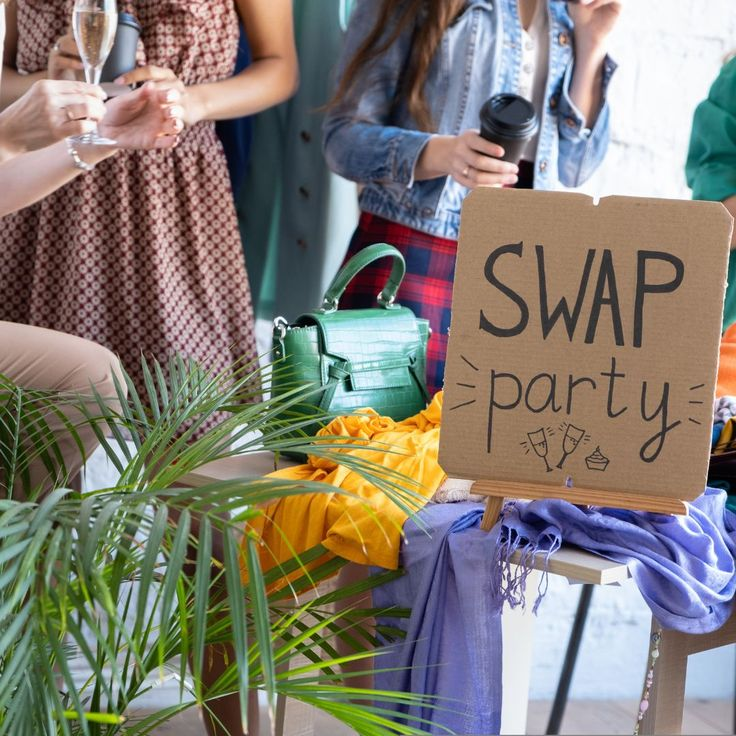
Organizing clothing swaps with friends
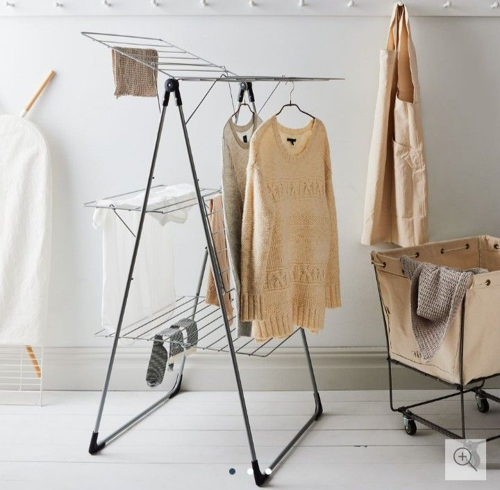
Line drying saves energy
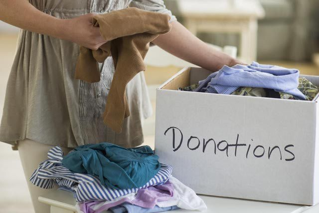
Donating what you no longer wear
Simple DIY Solutions

All-purpose cleaner: vinegar and water
Something?
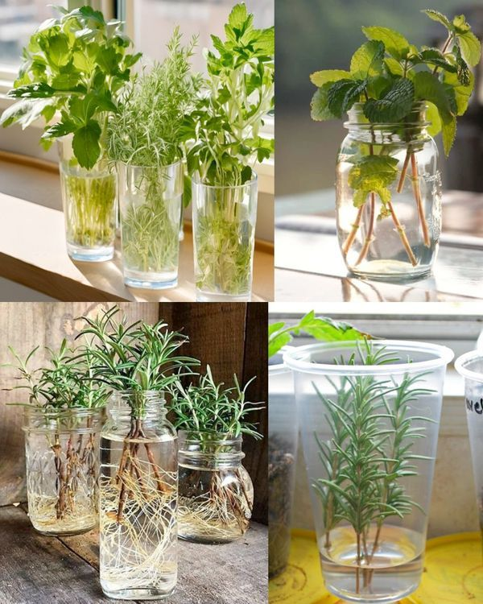
Regrowing herbs